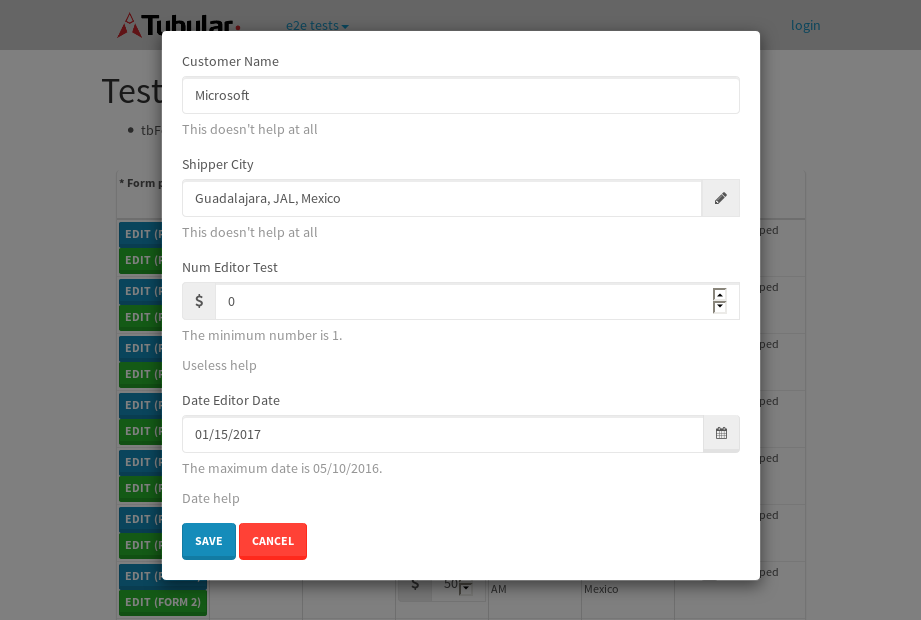

tbColumn.Grid Sorting - 27.287sTests: 5Skipped: 0Failures: 0 should sort data in ascending order then on descending order when sorting by Order Id column - 5.553sTests passed: 100.00%should order data in ascending order when click-sorting an unsorted text column - 5.071sTests passed: 100.00%should order data in descending order when click-sorting an ascending-sorted text column - 5.706sTests passed: 100.00%should order data in ascending order when click-sorting an unsorted date column - 5.243sTests passed: 100.00%should order data in descending order when click-sorting twice an unsorted date column - 5.713sTests passed: 100.00%
tbColumn.Grid Components - 3.623sTests: 3Skipped: 0Failures: 0 should print grid - 1.321s***Skipped***Tests passed: 0%should export grid - 1.101s***Skipped***Tests passed: 0%should show column selector - 1.201sTests passed: 100.00%
tbSingleForm.Form validations - 2.225sTests: 2Skipped: 0Failures: 0 should have an empty required field - 1.335sTests passed: 100.00%should not be able to click on save - 0.89sTests passed: 100.00%
Tubular Filters.tbColumnFilter - 106.695sTests: 12Skipped: 0Failures: 0 should cancel filtering when clicking outside filter-popover - 9.44sTests passed: 100.00%should disable Value text-input for "None" filter - 6.481sTests passed: 100.00%should disable apply button for "None" filter - 6.748sTests passed: 100.00%should decorate popover button when showing data is being filtered for its column - 11.701sTests passed: 100.00%should correctly filter data for the "Equals" filtering option - 7.709sTests passed: 100.00%should correctly filter data for the "Not Equals" filtering option - 8.251sTests passed: 100.00%should correctly filter data for the "Contains" filtering option - 8.994sTests passed: 100.00%should correctly filter data for the "Not Contains" filtering option - 8.691sTests passed: 100.00%should correctly filter data for the "Starts With" filtering option - 6.97sTests passed: 100.00%should correctly filter data for the "Not Starts With" filtering option - 7.039sTests passed: 100.00%should correctly filter data for the "Ends With" filtering option - 6.827sTests passed: 100.00%should correctly filter data for the "Not Ends With" filtering option - 6.767sTests passed: 100.00%
Tubular Filters.tbColumnDateTimeFilter - 134.69sTests: 12Skipped: 0Failures: 0 should cancel filtering when clicking outside filter-popover - 7.484sTests passed: 100.00%should disable Value text-input for "None" filter - 6.428sTests passed: 100.00%should disable apply button for "None" filter - 6.493sTests passed: 100.00%should clear filtering when clicking on Clean button - 17.953sTests passed: 100.00%should decorate popover button when showing data is being filtered for its column - 11.703sTests passed: 100.00%should correctly filter data for the "Equals" filtering option - 6.658sTests passed: 100.00%should correctly filter data for the "Not Equals" filtering option - 6.99sTests passed: 100.00%should correctly filter data for the "Between" filtering option - 12.289sTests passed: 100.00%should correctly filter data for the "Greater-or-equal" filtering option - 12.522sTests passed: 100.00%should corretlly filter data for the "Greater" filtering option - 12.164sTests passed: 100.00%should correctly filter data for the "Less-or-equal" filtering option - 11.638sTests passed: 100.00%should correctly filter data for the "Less" filtering option - 11.671sTests passed: 100.00%
Tubular Filters.tbColumnOptionsFilter - 80.824sTests: 3Skipped: 0Failures: 0 should cancel filtering when clicking outside filter-popover - 8.784sTests passed: 100.00%should decorate popover button when showing data is being filtered for its column - 11.862sTests passed: 100.00%should filter column-elements in accordance to the selected filter when selecting a single option - 48.969sTests passed: 100.00%
Tubular Filters.tbTextSearch - 50.808sTests: 5Skipped: 0Failures: 1 min-chars is not set - 0.934sTests passed: 100.00%should filter data in searchable-column customer name to matching inputted text, starting from 3 characters - 7.78sTests passed: 100.00%should filter data in searchable-column shipper city to matching inputted text, starting from 3 characters - 13.137sTests passed: 100.00%should show clear button when there is inputted text only - 6.691sTests passed: 100.00%should clear filtering when clicking clear button - 16.661sExpected 10 not to be 10.✗Tests passed: 0.00%
tbForm related components.tbCheckboxField - 9.373sTests: 2Skipped: 0Failures: 0 should save changes on "SAVE" - 4.072sTests passed: 100.00%should discard changes on "CANCEL" - 3.513sTests passed: 100.00%
tbForm related components.tbDropDownEditor - 13.586sTests: 5Skipped: 0Failures: 0 should set initial input value to the value of "value" attribute when defined - 2.169sTests passed: 100.00%should show the component name value in a label field when "showLabel" attribute is true - 1.803sTests passed: 100.00%should show a help field equal to this attribute, is present - 2.345sTests passed: 100.00%should submit modifications to item/server when clicking form "Save" - 4.043sTests passed: 100.00%should NOT submit modifications to item/server when clicking form "Cancel" - 2.315sTests passed: 100.00%
tbForm related components.tbTextArea - 20.194sTests: 7Skipped: 0Failures: 0 should set initial input value to the value of "value" attribute when defined - 1.979sTests passed: 100.00%should be invalidated when the number of chars is not in the range of "min" and "max" attributes - 2.483sTests passed: 100.00%should show the component name value in a label field when "showLabel" attribute is true - 1.659sTests passed: 100.00%should show a help field equal to this attribute, is present - 2.158sTests passed: 100.00%should require the field when the attribute "required" is true - 3.153sTests passed: 100.00%should submit modifications to item/server when clicking form "Save" - 3.961sTests passed: 100.00%should NOT submit modifications to item/server when clicking form "Cancel" - 3.701sTests passed: 100.00%
tbForm related components.tbDateEditor - 18.617sTests: 6Skipped: 0Failures: 4 should set initial date value to the value of "value" attribute when defined - 2.611sExpected false to be true.✗Tests passed: 0.00%should be invalidated when the date is not in the range of "min" and "max" attributes - 3.675sExpected false to be true.✗Expected 1 to be less than 1.✗Tests passed: 33.33%should show the component name value in a label field when "showLabel" attribute is true - 2.576sTests passed: 100.00%should show a help field equal to this attribute, is present - 2.37sTests passed: 100.00%should submit modifications to item/server when clicking form "Save" - 2.852sExpected false to be true.✗Tests passed: 0.00%should NOT submit modifications to item/server when clicking form "Cancel" - 2.833sExpected false to be true.✗Tests passed: 0.00%
tbForm related components.tbTypeaheadEditor - 20.134sTests: 7Skipped: 0Failures: 1 should show an options list when there is an API-info/component entered-data - 2.278sTests passed: 100.00%should select the option clicked - 3.648sTests passed: 100.00%should show a "delete" button when an option/match is selected, and delete the option if button is clicked - 2.441sFailed: each key must be a number of string; got boolean✗Tests passed: 50.00%should show a label value equal to the component name when "showLabel" attribue is true - 1.905sTests passed: 100.00%should require a value when "require" attribute is true - 2.785sTests passed: 100.00%should submit modifications to item/server when clicking form "Save" - 3.883sTests passed: 100.00%should NOT submit modifications to item/server when clicking form "Cancel" - 2.298sTests passed: 100.00%
tbForm related components.tbSimpleEditor - 22.707sTests: 9Skipped: 0Failures: 1 should set initial input value to the value of "value" attribute when defined - 2.275sTests passed: 100.00%should be invalidated when the number of chars is not in the range of "min" and "max" attributes - 2.807sTests passed: 100.00%should show the component name value in a label field when "showLabel" attribute is true - 1.917sTests passed: 100.00%should set input placeholder to the value of "placeholder" attribute - 2.44sTests passed: 100.00%should validate the control using the "regex" attribute, if present - 2.245sFailed: each key must be a number of string; got function✗Tests passed: 0.00%should show a help field equal to this attribute, is present - 2.182sTests passed: 100.00%should require the field when the attribute "required" is true - 2.209sTests passed: 100.00%should submit modifications to item/server when clicking form "Save" - 3.267sTests passed: 100.00%should NOT submit modifications to item/server when clicking form "Cancel" - 2.389sTests passed: 100.00%
tbForm related components.tbNumericEditor - 16.596sTests: 7Skipped: 0Failures: 0 should set initial component value to the value of "value" attribute when defined - 1.823sTests passed: 100.00%should be invalidated when the entered number is not in the range of "min" and "max" attributes - 2.594sTests passed: 100.00%should show the component name value in a label field when "showLabel" attribute is true - 1.911sTests passed: 100.00%should show a help field equal to this attribute, is present - 1.743sTests passed: 100.00%should require the field when the attribute "required" is true - 1.888sTests passed: 100.00%should submit modifications to item/server when clicking form "Save" - 3.398sTests passed: 100.00%should NOT submit modifications to item/server when clicking form "Cancel" - 2.377sTests passed: 100.00%
tbForm Connection Error - 2.746sTests: 1Skipped: 0Failures: 0 tbForm connection error functionality - 0.405sTests passed: 100.00%
tbForm Connection Error - 2.959sTests: 1Skipped: 0Failures: 0 tbForm connection error functionality - 0.423sTests passed: 100.00%
tbForm Connection Error - 2.797sTests: 1Skipped: 0Failures: 1 tbForm connection error functionality - 0.469sExpected '' to equal 'No data found'.✗Tests passed: 0.00%
tb Form Date Editor.tbDateEditor - 19.406sTests: 6Skipped: 0Failures: 0 should set initial date value to the value of "value" attribute when defined - 2.023sTests passed: 100.00%should be invalidated when the date is not in the range of "min" and "max" attributes - 3.683sTests passed: 100.00%should show the component name value in a label field when "showLabel" attribute is true - 2.131sTests passed: 100.00%should show a help field equal to this attribute, is present - 2.013sTests passed: 100.00%should submit modifications to item/server when clicking form "Save" - 3.061sTests passed: 100.00%should NOT submit modifications to item/server when clicking form "Cancel" - 4.303sTests passed: 100.00%
tbGridComponents - 9.356sTests: 6Skipped: 0Failures: 0 should add item with newRow method - 2.072sTests passed: 100.00%should add item with newRow method and cancel action - 0.812sTests passed: 100.00%should update item with tbSaveButton - 1.865sTests passed: 100.00%should update item with tbSaveButton and cancel action - 1.019sTests passed: 100.00%should remove item with tbRemoveButton - 1.115sTests passed: 100.00%should remove item with tbRemoveButton and cancel action - 0.839sTests passed: 100.00%
tbGridPager.navigation buttons - 9.305sTests: 1Skipped: 0Failures: 0 should perform no action when clicking on the numbered navigation button corresponding to the current-showing results page - 1.735sTests passed: 100.00%
tbGridPager.navigation buttons.first/non-last results page related functionallity - 3.907sTests: 2Skipped: 0Failures: 0 should disable "first" and "previous" navigation buttons when in first results page - 1.799sTests passed: 100.00%should enable "last" and "next" navigation buttons when in a results page other than last - 2.107sTests passed: 100.00%
tbGridPager.navigation buttons.last/non-first results page related functionallity - 3.662sTests: 2Skipped: 0Failures: 0 should disable "last" and "next" navigation buttons when in last results page - 1.672sTests passed: 100.00%should enable "first" and "previous" navigation buttons when in a results page other than first - 1.99sTests passed: 100.00%
tbGridPager.page navigation - 7.272sTests: 5Skipped: 0Failures: 0 should go to next results page when clicking on next navigation button - 1.702sTests passed: 100.00%should go to previous results page when clicking on previous navigation button - 1.478sTests passed: 100.00%should go to last results page when clicking on last navigation button - 1.455sTests passed: 100.00%should go to first results page when clicking on first navigation button - 1.307sTests passed: 100.00%should go to corresponding results page when clicking on a numbered navigation button - 1.33sTests passed: 100.00%
tbGridPagerInfo - 5.094sTests: 2Skipped: 0Failures: 0 should show text in accordance to numbered of filter rows and current results-page - 1.278sTests passed: 100.00%should show count in footer - 0.521sTests passed: 100.00%
tbHttp - 23.277sTests: 8Skipped: 0Failures: 0 should be authenticated - 3.095sTests passed: 100.00%retrieve data - 2.571sTests passed: 100.00%should not login bad credentials - 3.77sTests passed: 100.00%should have a refresh token - 2.449sTests passed: 100.00%should remove authentication - 2.553sTests passed: 100.00%get method-Is not authenticated - 3.811sTests passed: 100.00%post method-Is not authenticated - 2.312sTests passed: 100.00%should regenerate access token on post - 2.716sTests passed: 100.00%
LocalData.Grid Local Data Sorting - 7.142sTests: 4Skipped: 0Failures: 1 should order data in ascending order when click-sorting an unsorted text column - 1.703sTests passed: 100.00%should order data in descending order when click-sorting an ascending-sorted text column - 1.66sTests passed: 100.00%should correctly filter data for the "Contains" filtering option - 1.449sFailed: Element is not currently interactable and may not be manipulated✗Tests passed: 0.00%should correctly filter data for the "Contains" with ENTER key - 2.328sTests passed: 100.00%
OData.Grid OData Sorting - 32.675sTests: 7Skipped: 0Failures: 1 should order data in ascending order when click-sorting an unsorted numeric column - 5.268sTests passed: 100.00%should order data in descending order when click-sorting an ascending-sorted numeric column - 4.738sTests passed: 100.00%should order data in ascending order when click-sorting an unsorted text column - 3.234sTests passed: 100.00%should order data in descending order when click-sorting an ascending-sorted text column - 4.365sTests passed: 100.00%should order data in ascending order when click-sorting an unsorted date column - 5.145sTests passed: 100.00%should order data in descending order when click-sorting an ascending-sorted date column - 6.464sTests passed: 100.00%should correctly filter data for the "Contains" filtering option - 3.459sFailed: Element is not enabled✗Tests passed: 0.00%
tbPageSizeSelctor - 22.667sTests: 4Skipped: 0Failures: 0 should filter up to 10 data rows per page when selecting a page size of "10" - 2.812sTests passed: 100.00%should filter up to 20 data rows per page when selecting a page size of "20" - 2.572sTests passed: 100.00%should filter up to 50 data rows per page when selecting a page size of "50" - 5.637sTests passed: 100.00%should filter up to 100 data rows per page when selecting a page size of "100" - 7.484sTests passed: 100.00%
tbRowSelectable - 15.216sTests: 2Skipped: 0Failures: 0 selected rows - 7.599sTests passed: 100.00%unselected rows - 5.433sTests passed: 100.00%
tbSingleForm.Form fields - 15.94sTests: 7Skipped: 0Failures: 1 should load correct info - 1.216sTests passed: 100.00%should change customer name - 1.051sTests passed: 100.00%should save it - 3.526sFailed: Element is not enabled✗Tests passed: 0.00%should clear the inputs - 1.008sTests passed: 100.00%should update - 1.301sTests passed: 100.00%should reset editor - 4.913sTests passed: 100.00%should not save if not Changes - 2.922sTests passed: 100.00%
tbSingleForm.Form validations - 2.399sTests: 2Skipped: 0Failures: 0 should load correct info - 0.906sTests passed: 100.00%should not be able to click on save - 1.493sTests passed: 100.00%
tubularTemplateServiceModule.#createColumns() - 1.725sTests: 2Skipped: 0Failures: 0 should return an array with 7 elements - 0.867sTests passed: 100.00%first element should match - 0.858sTests passed: 100.00%
tubularTemplateServiceModule.#generateFieldsArray() - 2.09sTests: 2Skipped: 0Failures: 0 should return an array with 7 elements - 1.044sTests passed: 100.00%first element should match - 1.046sTests passed: 100.00%
tubularTemplateServiceModule.#generatePopup() - 0.922sTests: 1Skipped: 0Failures: 0 should html match - 0.922sTests passed: 100.00%
tubularTemplateServiceModule.#getEditorTypeByDateType() - 4.632sTests: 4Skipped: 0Failures: 0 should be tbDateTimeEditor - 1.96sTests passed: 100.00%should be tbNumericEditor - 0.999sTests passed: 100.00%should be tbCheckboxField - 0.845sTests passed: 100.00%should be tbSimpleEditor - 0.827sTests passed: 100.00%
tubularTemplateServiceModule.#generateForm() - 5.723sTests: 3Skipped: 0Failures: 0 should single layout html match - 0.923sTests passed: 100.00%should two columns layout html match - 1.024sTests passed: 100.00%should three columns layout html match - 3.775sTests passed: 100.00%
tubularTemplateServiceModule.#generateCells() - 1.12sTests: 1Skipped: 0Failures: 0 should html match - 1.12sTests passed: 100.00%
tubularTemplateServiceModule.#generateGrid() - 0.84sTests: 1Skipped: 0Failures: 0 should html match - 0.84sTests passed: 100.00%


{kind=link}